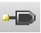

Creating Pins
-
In the layout window, choose Create – Pin.
Alternatively, click the Create Pin icon  on the Create toolbar or right-click any free space on the design canvas to display the Layout shortcut menu and select Create – Pin.
The Create Pin form appears. - Set Mode as Manual.
-
Set Connectivity to specify the type of pins you want to create.
- Select Strong to create multiple pins as strongly connected.
-
Select Weak to create multiple pins as weakly connected.
Select Must Connect All Pins to apply theLEF58_MUSTJOINALLPORTSproperty to all newly created pin terminals in the layout. This implies that the router must connect all pins of the selected terminal.
-
Specify one or more terminal names in the Terminal Names field. This is the name of the net to which the pins will connect. Separate multiple names by using spaces.
The behavior of the Terminal Names field depends on the selection of the Keep First Name check box. The following scenarios may occur when Keep First Name is off:- If you specify a single name in Terminal Names, a single new terminal and pin are created. If the specified terminal already exists, a new pin is added to the terminal.
- If you leave Terminal Names blank, you are prompted to either specify a terminal name or to click an existing pin. If you click an existing pin, the terminal name of the pin populates the Terminal Names field in the form and a pin figure is added to the existing pin.
- If you specify multiple names in Terminal Names, new terminals with the specified names are created if they do not already exist. New pins are created on each of the new terminals.
- Select Physical Only to create the terminal only in the block domain.
-
Select Keep First Name for adding multiple pin figures to the same pin shape on the same terminal. This option works in conjunction with the Terminal Names field. The following scenarios may occur when Keep First Name is on:
- If you specify a single name in the Terminal Names field, the behavior is the same when Keep First Name is off, that is, a new terminal and pin are created, if they do not already exist. Multiple pin figures can be added to this new pin shape.
- If you specify multiple names in the Terminal Names field, only a single terminal is created with the first specified name. Multiple pin figures are added to the same pin shape and they are connected strongly or weakly, depending on the Connectivity type you selected.
- Edit the X and Y pitch values to set the distance between the center points of the pins, if required.
-
Select the Create Label check box to attach a label to the pin showing the terminal name.
For more information, see Setting Pin Label Text Style Options. -
Select Create as ROD Object to create the pin figure as a ROD object, else the pin figure is created as a polygon.
The Name field becomes editable, allowing you to update the name from the default that is displayed. The default name is derived based on the Mode you select. -
Set Pin Figure to specify the shape of the pin.
When creating a rectangle, dot, polygon, or circle, the system prompts you to enter a point for the shape. To create a zero-size dot pin, click twice on the same point. - Select Attach Pin to Overlapping Shape on Same Layer to attach the pin shape to an overlapping shape present on the same layer, the purpose can be different. This option is useful to ensure that the attached pin moves when the parent shape is moved and gets deleted when parent shape is deleted. This option works only when there is a single overlapping shape. If there are more than one overlapping shapes, none of the shapes are attached and a warning message is displayed.
- Select an I/O Type to indicate the direction of the signal into or out of the pin.
- If you are creating a polygon pin, set Snap Mode to specify how the pointer snaps to the pin.
- Select Access Direction to specify the direction in which the routing tools can connect routing to the pin.
- Set the Signal Type of the net that is used for creating the pin.
- Click on the canvas to create the pin.
- If you selected the Create Label check box, click again to place the label on the pin figure.
- If you are creating multiple pins, continue to click on the canvas to create and place pins and labels. If Keep First Name is not selected or you specified a single name in the Terminal Names field, specify a terminal name in the form or click an existing pin to pick the terminal name.
-
Click Cancel in the Create Pin form or press
Escwhen you are done.
If you are creating multiple pins, pin figures are added to the same first specified terminal and the pin figures share the pin name. If you are creating a single pin, the pin is added to the specified terminal name. Pin names are auto-generated.
When the connectivity is set to strong, and a terminal name is entered in the create pin form, a new pin is created. This new pin is strongly connected to itself but weakly connected to other pins on the same terminal. For creating a new pin strongly connected to another pin in the terminal, you need to click the existing pin shape on the canvas.
Related Topics
Setting Pin Label Text Style Options
Support for Orthogonal WSP Grid
Return to top